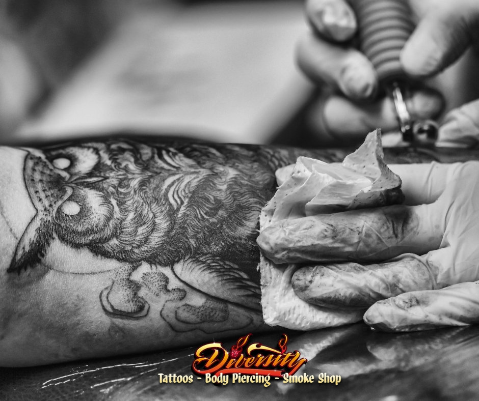

Getting Started
Tips for choosing your first Tattoo
There are a lot of mixed thoughts and emotions you may experience before getting your first tattoo. You may feel excited, happy, impatient, and even a little nervous. Let us help to put your mind at ease with these 11 tips that are sure to help your first tattoo experience go smoothly.
1. Don’t rush.
The design is quite possibly the most important step, followed closely by where you get it done. If you’re not sure that you’re 100% happy with how the preliminary sketches look, talk to your artist about it. They can adjust the drawing and answer your questions.
2. Research the shop.
Read the online reviews and visit in person to check out the health standards, clientele, and tattoo artists. It’s important to make sure you’re comfortable in the shop, so do your tattoo research well ahead of time.
3. Research design ideas ahead of time.
Research the design ideas you like ahead of time and come in with as much reference material necessary to deliver an articulate description for your tattoo. We will use your base description as a guideline to create a custom piece of art just for you. If you are considering a portrait, it’s best to supply a large (preferably 8x10) clear image to work from so the detail can be captured as much as possible.
4. Question.
Don’t be afraid to ask questions, questions, and more questions. A good tattoo artist will answer every single one and take the time to make sure you’re comfortable before they start the process with you. If they don’t answer to your satisfaction, you’re just not connecting, or if they seem shady, leave.
5. Consider placement.
Your first tattoo is a special experience in and of itself, you may not want to choose something really huge or extremely visible (such as your face/neck/hands) for your first one. First of all, it’s a big commitment and it could make it difficult to get employment depending upon your field. We've got a whole blog post about advice on tattoos and jobs.
6. Don’t be too thrifty.
You don’t want your first tattoo to end up on Fail Blogs. Go ahead and shop around until you get an idea of fair pricing, but it’s a great idea to choose a shop based on the artists’ skills, experience, and health standards, rather than price.
7. Take care of yourself.
Don’t go to the shop drunk (impaired judgment + tattooing = bad idea), and make sure you eat a decent meal and drink lots of water beforehand.
8. Mentally prepare.
It’s going to hurt a little and you’re going to bleed a little, but it never hurts to know what you’re getting into when tattoo machines are involved. Trust us, it’s worth it. And it doesn't hurt all that bad.
9. Wear comfortable clothes.
Depending upon where the tattoo will be, you’ll want to wear clothes that will allow easy access to that part of your body (if you’re going to get a leg tattoo, don’t wear skinny jeans). Also, if the tattoo is large, you may be there for awhile, so wear something that’s comfortable to sit in.
10. Take care of it.
Tattoo aftercare is something you should take seriously – we do. Healing your tattoo is just as important as the process itself, so don’t use any type of ointment or left over tattoo wax or goo from 5 years ago. After all you and your tattoo deserve the best. If you want it to stay looking great for years to come, check out our tattoo aftercare instructions.
11. Relax!
This should be an enjoyable process, and a great story to tell in the future. Have fun with it!